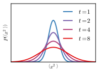
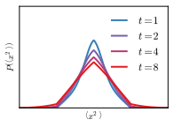
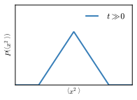
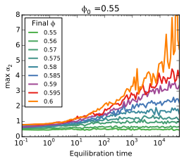
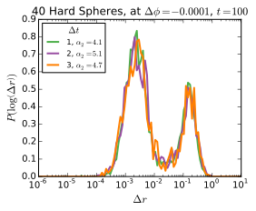
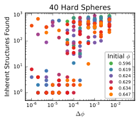
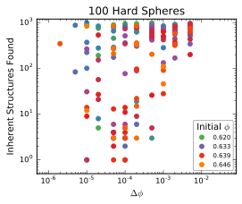

\( \alpha_2 = \frac{\left< x^4 \right> }{3 \left< x^2 \right> } - 1 \) is the "non-Gaussian parameter", used as a measure of dynamical heterogeneities
For a Gaussian distribution, \( \left< x^4 \right> = 3\left< x^2 \right> \), so \( \alpha_2 = 0 \)
Can be calculated from particle-tracking
A random walk (diffusion) is Gaussian at any given time:
\( P(x, t) = \frac{1}{2 \sqrt{\pi D t}} - e ^ \frac{x^2}{4 D t} \)
So if the particles aren’t diffusing, then \( \alpha_2 \neq 0 \)
For caged particles, \( \alpha_2 \approx -\frac{1}{5} \)
Closely related to caging and cage-breaking behavior
In a cage, particles move very small distances
Cage-breaking would involve much larger jumps
The distribution of "step sizes" would be very non-Gaussian
\( \alpha_2 \) measures how "not gaussian" the distribution is
Diffusion | Mixed | Caging |
 |  |  |
\( \alpha_2 = 0 \) | \( \alpha_2 > 0 \) | \( \alpha_2 = -\frac{1}{5} \) |
Lines drawn are \(A \left(\phi^\star - \phi\right)^n\), and \(\phi^\star \) is fitted
Provocative, but inconclusive
\( \phi^\star = 0.600 \pm 0.001\) is an unusual density
There is less than two orders of magnitude on this plot
3.5 is a long ways from ∞
Start with the sum of two gaussians \( P(r) \propto A r ^ 2 \sigma ^ 2 e ^ {-\frac{r ^ 2}{\sigma ^ 2}} + B r ^ 2 e ^ {-r^2} \)
Increasing σ while decreasing \( \frac{A}{B} \) gives a larger \( \alpha_2 \)
More specifically: For a given σ, \( \frac{A}{B} = \frac{\sigma ^ 2}{1 + \sigma^2} \) yields the maximum \( \alpha_2 = \frac{\left(\delta ^ 2-1\right)^2}{4 \delta ^2} \)
As we increase density, we get an increased separation
As time varies, the ratio \( \frac{A}{B} \) varies
Prepare a state at \( \phi_0 = 0.55 \) at equilibrium
Fast quench it to some density \( \phi \)
Calculate \( \max_{\Delta t} \alpha_2 \) as a function of time
Cartoon |  Simulation |
Glassy behavior starts at \( \phi \approx 0.55 – 0.59 \)
Jamming is at \( \phi \approx 0.64 \)
What happens if we go really close to jamming?
Permanent Caging
Floaters
Close to Jamming: | Glassy: |
 | |
Peak at \( 10^{-2} \) : Tight Cages | Peak at \( 10^{-1} \) : Caged Floaters |
Peak at \( 10^{-1} \) : Caged Particles | Peak at \( 10^{0} \) : Rearrangements |
Solid: Backbone | Dashed: Floaters | Thin Dotted: Both |
 |  |
Each dot represents a single system
At 1000 timepoints over the course of the simulation, a snapshot was taken, and the structure was "minimized" to find the inherent structures visited
Systems seem able to access either a very limited number of inherent structures, or a very large number
Fit the step distributions to the sum of two gaussians
Figure out how that scales with time and ϕ
This is hard.
Corey O’Hern, Mark Shattuck, Christine Jacobs-Wagner
Brad Parry, Ivan Surovtsev, Eric Dufresne, and everyone I talked to
Sackler, PEB, and HHMI